Unit 1: Plant-Water Relations and Mineral Nutrition
Plant Physiology and Metabolism (Theory) · BOT-DSM-511 · BSc 5th Semester, UGC NEP · Unit 1: 14 hours (unit total)
A note on your class notes — read this first. Of the topics in this unit, only membrane and ion transport was strong in your class notes. The following were missing from your class notes, so study them here from scratch and do not assume you have covered them before: water potential and its components, transpiration and its significance, factors affecting transpiration, essential elements and the criteria of essentiality, and the roles of individual essential elements. Root pressure and guttation are also treated here in full, as they need to be learned alongside transpiration. Nothing on this page is copied from your handwritten notes.
Tip: searching filters the topic sections below. Clear the box to show all sections again.
Part A: Plant-Water Relations
Importance of Water
Definition. Water is the most abundant constituent of living plant cells (commonly 80–90% of the fresh weight of herbaceous tissue) and the medium in which almost all plant metabolism occurs. No other substance can replace it.
Water is important for several distinct reasons, and examiners expect more than "plants need water to live":
Solvent and transport medium: mineral ions, sugars, amino acids and hormones move in aqueous solution — in xylem sap, phloem sap and cell sap.
Raw material for photosynthesis: water is split in photolysis during the light reactions, releasing oxygen and providing electrons and protons.
Medium for biochemical reactions: hydrolysis, respiration and most enzyme reactions take place in water.
Turgidity and structure: turgor pressure keeps herbaceous stems upright, opens stomata and drives cell enlargement during growth.
Temperature regulation: water has a high specific heat and a high latent heat of vaporisation, so transpiration cools leaves and buffers temperature change.
Seed germination and dispersal: imbibition of water activates metabolism in the seed, and water disperses some fruits and seeds.
Maintains protoplasm: the colloidal nature of protoplasm, and the structure of membranes and proteins, depends on hydration.
A plant loses far more water than it retains: typically well over 95% of the water absorbed by roots is lost by transpiration, and only a small fraction is retained or used in photosynthesis. That is why water relations dominate plant physiology.
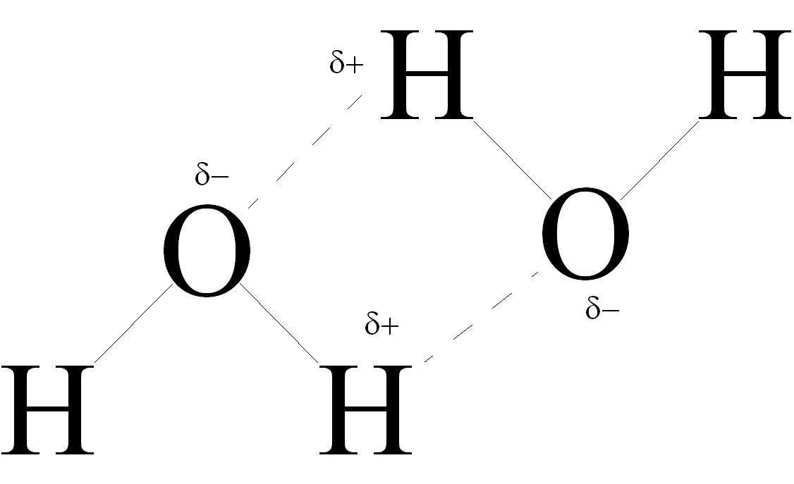
Hydrogen bonds between water molecules: the partly positive hydrogen of one molecule is attracted to the partly negative oxygen of another. This bonding underlies water's high specific heat, cohesion and surface tension. Source: Wikimedia Commons, public domain.
Water Potential
Definition. Water potential (Ψw) is the chemical potential of water in a system expressed in pressure units (megapascals, MPa), relative to pure water at the same temperature and atmospheric pressure. Water always moves from a region of higher water potential to a region of lower (more negative) water potential.
The water potential of pure water at atmospheric pressure is zero (0 MPa) by definition. Adding solutes lowers water potential, so the water potential of a solution or a cell is normally negative. Water potential is the single most useful concept in plant-water relations because it predicts the direction of water movement whether the cause is solutes, pressure, or adsorption to surfaces.
Water potential is measured in megapascals (MPa). One megapascal equals 10 bars, approximately 9.87 atmospheres. A typical mesophyll cell may have a water potential around −0.5 to −1.0 MPa, while dry soil or a severely water-stressed leaf can be far more negative.
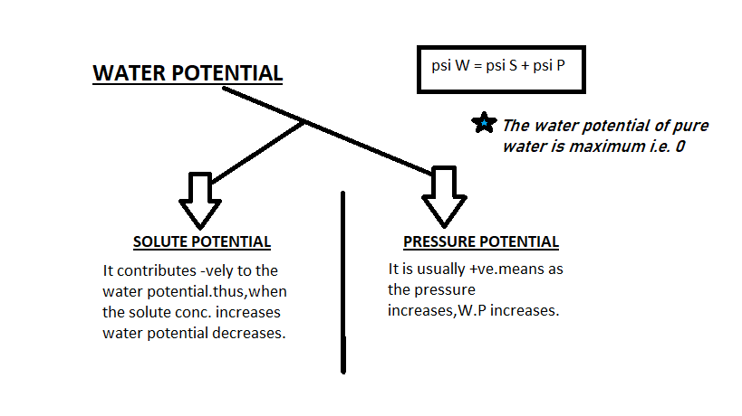
Water potential summary: Ψw = Ψs + Ψp. Solute potential is negative, pressure potential is usually positive, and pure water has Ψw = 0. Source: Wikimedia Commons, “Water potential by devashish puri”, CC BY-SA 4.0.
Step 1 — Solutes present? Dissolved solutes attract water and lower its free energy: Ψs is negative.
↓
Step 2 — Pressure applied? Turgor pressure from the cell wall pushes water out: Ψp is usually positive in a living cell.
↓
Step 3 — Water bound to surfaces? In dry seeds, soil and cell walls, adsorption lowers water potential further: Ψm is negative.
↓
Step 4 — Add them: Ψw = Ψs + Ψp + Ψm. Water moves towards the more negative Ψw.
Solute Potential (Osmotic Potential, Ψs)
Definition. Solute potential (Ψs), also called osmotic potential, is the reduction in water potential caused by dissolved solutes. It is always negative (or zero in pure water) and becomes more negative as solute concentration increases.
Solute potential is numerically equal to, but opposite in sign to, osmotic pressure: if a solution has an osmotic pressure of 0.8 MPa, its solute potential is −0.8 MPa. This sign difference is a classic exam trap (see the Exam Traps section). Solute potential depends on the number of solute particles, not their chemical identity, and increases in magnitude with concentration and with absolute temperature.
Example: a cell sap with Ψs = −1.0 MPa will draw water in from any neighbouring solution whose water potential is higher than −1.0 MPa, provided the cell wall allows the resulting pressure to develop.
Diagram: More solute particles means a more negative solute potential: pure water 0 MPa, dilute solution about -0.3 MPa, concentrated solution about -1.2 MPa.
Pressure Potential (Ψp)
Definition. Pressure potential (Ψp) is the component of water potential due to hydrostatic pressure. In a plant cell it is the turgor pressure exerted by the protoplast against the cell wall. It is usually positive, and it is zero in a flaccid cell.
When water enters a cell by osmosis, the protoplast swells and presses against the rigid cell wall. The wall pushes back with an equal and opposite wall pressure. That positive hydrostatic pressure raises the water potential of the cell, opposing further entry of water. In a fully turgid cell, Ψp exactly balances Ψs, so Ψw = 0 and no net water movement occurs even though solutes are present.
Pressure potential can be negative in xylem vessels, where transpiration pull creates tension (a pulling force rather than a pushing pressure). That negative pressure potential is central to the ascent of sap, and it is one reason the cohesion–tension theory can lift water to the tops of tall trees.
Diagram: In a flaccid cell pressure potential is 0; as water enters, turgor rises and pressure potential becomes positive, opposing further entry.
Matric Potential (Ψm)
Definition. Matric potential (Ψm) is the reduction in water potential caused by the adsorption of water onto hydrophilic surfaces (the matrix) and by capillary forces in small pores. It is always negative.
Matric potential matters most where water is tightly bound: in dry soil particles, in dry seeds during imbibition, and in cell walls. In a fully hydrated living cell it is usually so small compared with Ψs and Ψp that it is ignored, which is why the working equation for most cells is simply Ψw = Ψs + Ψp. Imbibition — the uptake of water by dry seeds and by materials such as wood and gelatin — is driven largely by a very negative matric potential, and it can generate enormous pressures.
Diagram: Matric potential is water held tightly on surfaces and in tiny pores: dry soil grains, dry seed coats and cell walls bind water so it is less free to move.
Total Water Potential: Ψ = Ψs + Ψp, and Flaccid vs Turgid Cells
Definition. Total water potential is the sum of its components: Ψw = Ψs + Ψp + Ψm, and in most cells Ψw = Ψs + Ψp. The state of the cell determines which components are present and what Ψw results.
State of cell
Solute potential (Ψs)
Pressure potential (Ψp)
Water potential (Ψw)
What happens
Flaccid cell (just plasmolysed, protoplast not pressing on wall)
Negative, e.g. −1.0 MPa
0 MPa
−1.0 MPa
Cell draws water in strongly; no turgor to oppose entry.
Partially turgid cell (taking up water)
Negative, e.g. −1.0 MPa
Positive but less than |Ψs|, e.g. +0.4 MPa
−0.6 MPa
Water still enters, but more slowly as Ψp rises.
Fully turgid cell (equilibrium)
Negative, e.g. −1.0 MPa
Positive and equal to |Ψs|, e.g. +1.0 MPa
0 MPa
No net water movement; wall pressure balances osmotic entry.
Plasmolysed cell (in hypertonic solution)
Negative
0 MPa (protoplast has shrunk away from wall)
Equal to Ψs (negative)
Water leaves the cell; protoplast pulls away from the wall.
Worked example: a cell with Ψs = −0.9 MPa and Ψp = +0.3 MPa has Ψw = −0.9 + 0.3 = −0.6 MPa. Placed in pure water (Ψw = 0 MPa), water enters because 0 > −0.6. As water enters, Ψp rises until Ψw reaches 0 and equilibrium is reached.
Remember the direction rule in one line: water moves from higher (less negative) Ψw to lower (more negative) Ψw — never the reverse, unless energy is spent.
Diagram: Worked example: a cell with solute potential -1.0 MPa and pressure potential +0.4 MPa has water potential -0.6 MPa, so water still enters until turgor balances it.
Transpiration
Definition. Transpiration is the loss of water in the form of water vapour from the aerial parts of a plant, mainly through the stomata of leaves, to the atmosphere.
Transpiration is not a single process. It occurs by three routes: stomatal transpiration (through stomata, about 80–90% of total loss in most leaves), cuticular transpiration (directly through the cuticle, small in most plants but significant in leaves with thin cuticles or when stomata are closed), and lenticular transpiration (through lenticels in woody stems, a small fraction). Stomatal transpiration dominates because stomata are the controlled openings of the leaf.
Each stoma is flanked by two guard cells. When guard cells take up water and become turgid, their differentially thickened walls cause the pore to open; when they lose water, the pore closes. Guard-cell turgor is controlled by potassium ion fluxes, malate accumulation, and the hormone abscisic acid (ABA) during water stress. The photograph below shows stomata and guard cells.
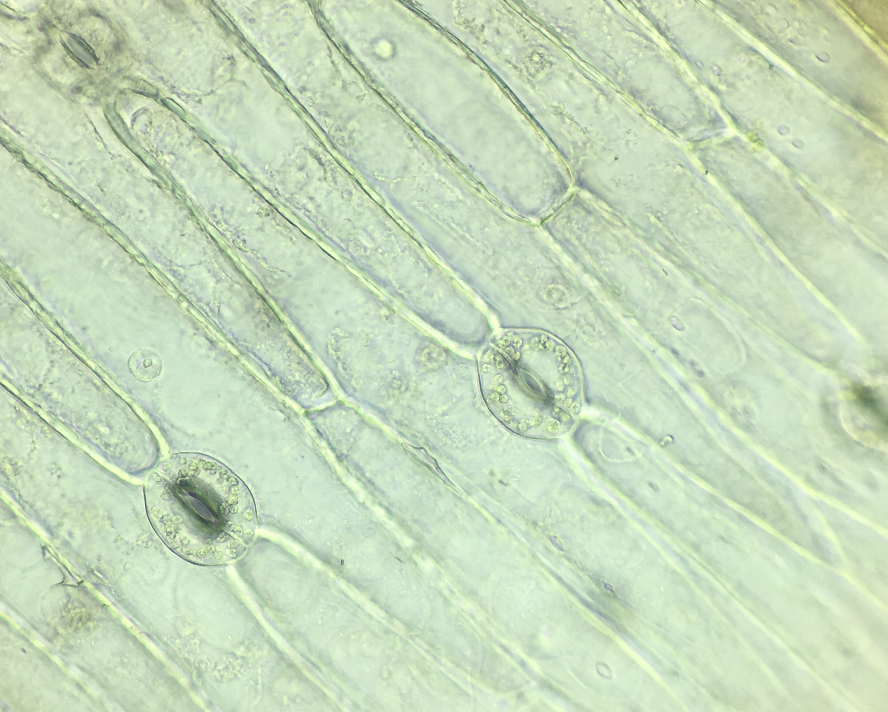
Stomata and guard cells on a leaf surface. Source: Wikimedia Commons, CC BY 4.0. Use this image to recall the guard-cell mechanism: turgid guard cells open the pore, flaccid guard cells close it.
Transpiration is a physical process driven by a vapour-pressure gradient between the water-saturated air inside the leaf (in the substomatal cavity) and the drier air outside. It is therefore faster on a dry, windy, warm day and slower in humid, still air — a pattern explained fully in the factors section below.
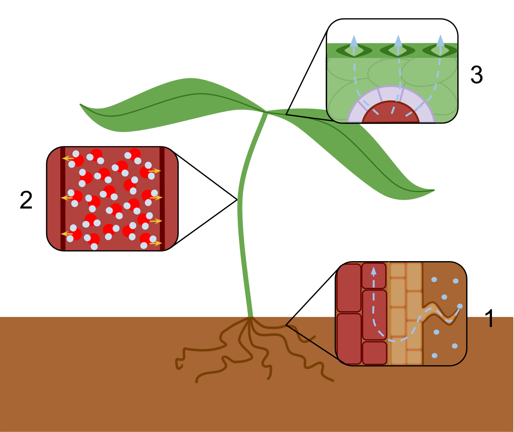
Overview of transpiration: water rises through the xylem and is lost from leaves through stomata. Source: Wikimedia Commons, CC BY-SA 3.0.
Significance of Transpiration
Definition. The significance of transpiration lies in the useful consequences of the transpiration stream: it creates the pull that lifts water and minerals, cools the leaf, and maintains the water and solute balance of the plant — even though the water loss itself is a cost.
Ascent of sap: transpiration pull is the main force lifting water from roots to leaves, including to the tops of tall trees (see the transpiration-pull diagram below).
Absorption and distribution of minerals: the upward stream carries dissolved mineral ions from roots to shoots.
Cooling effect: evaporation of water absorbs latent heat, keeping leaf temperature within the range in which enzymes work.
Maintains turgidity and cell expansion: a continuous supply of water keeps cells turgid, which is needed for growth and for stomatal opening.
Regulates water and solute balance: transpiration, together with root uptake, keeps the plant's water potential gradient in a working range.
Transpiration is often called a "necessary evil" (Curtis, 1926): it is unavoidable because stomata must open for carbon dioxide uptake for photosynthesis, and water vapour escapes through the same openings. The plant cannot take in CO2 without losing water, so the cost is the price of photosynthesis. That phrase, and the reasoning behind it, is a favourite short-answer point.
Diagram drawn for this site. Transpiration from the leaf creates tension in the xylem; cohesion between water molecules and adhesion to xylem walls transmit that pull down to the roots, lifting the whole water column.
Cohesion–tension theory (Dixon and Joly, 1894): (1) transpiration creates a negative pressure (tension) in leaf xylem; (2) cohesion between water molecules transmits the tension down the continuous water column; (3) adhesion to xylem walls prevents the column breaking away from the walls; (4) the column is pulled up as a whole. This, not root pressure, explains ascent in tall trees.
Factors Affecting Transpiration
Definition. The rate of transpiration is governed by the vapour-pressure gradient between leaf and air and by the resistance of the stomatal and boundary-layer pathways. Any factor that steepens the gradient or lowers resistance increases transpiration.
External factors
Light: increases transpiration — stomata open in light for photosynthesis, and light warms the leaf, raising internal vapour pressure.
Temperature: higher temperature raises the vapour pressure inside the leaf and the evaporating power of air, so transpiration increases.
Humidity: high atmospheric humidity reduces the vapour-pressure gradient, so transpiration falls; dry air increases it.
Wind velocity: gentle wind removes the humid boundary layer around the leaf and increases transpiration; very strong wind may close stomata and reduce it.
Atmospheric pressure: lower pressure (high altitude) increases the diffusion rate of water vapour.
Water availability in soil: water stress causes stomatal closure via ABA, sharply reducing transpiration.
Internal (plant) factors
Stomatal number, size and distribution: more stomata per unit area, larger pores and stomata on both surfaces increase potential loss.
Stomatal aperture: the single most direct internal control — open stomata transpire freely, closed stomata almost stop stomatal loss.
Leaf area and leaf structure: larger leaf area loses more water; thick cuticle, sunken stomata, leaf hairs and rolled leaves (xerophytic adaptations) reduce loss.
Water content of the leaf: a well-hydrated leaf with turgid guard cells keeps stomata open; a wilting leaf closes them.
Age and internal CO2 concentration: high internal CO2 tends to close stomata; low internal CO2 (during active photosynthesis) opens them.
Exam shortcut: for any factor, ask first "does it open stomata or steepen the vapour-pressure gradient?" If yes, transpiration rises; if it closes stomata or flattens the gradient, transpiration falls.
Increase transpiration: more light, higher temperature, lower humidity, wind (removes boundary layer), open stomata.
v
Decrease transpiration: darkness, low temperature, high humidity, still air, closed stomata, thick cuticle, sunken stomata.
Diagram: factors that raise or lower the transpiration rate, through the vapour-pressure gradient or stomatal resistance.
Root Pressure
Definition. Root pressure is the positive hydrostatic pressure developed in the xylem of roots by the active accumulation of mineral ions in root xylem sap, which draws water in by osmosis. It is a push from below, not a pull from above.
Mineral ions are actively pumped into the xylem of the root stele. The resulting low (more negative) water potential of xylem sap draws water in from surrounding root cells by osmosis, building up a positive pressure that can push water a short distance up the stem. Root pressure is best seen when transpiration is low — at night, or in early morning in a humid atmosphere — because then the pressure is not masked by transpiration pull.
Evidence for root pressure includes the exudation of sap from a cut stem (bleeding) and the rise of sap in a manometer attached to a cut stem. Typical root pressures are modest, commonly up to about 1–2 bars (0.1–0.2 MPa) in most plants, although a few reach higher values.
Exam trap. Root pressure is weak and cannot by itself explain the ascent of sap in tall trees. A pressure of 0.1–0.2 MPa can lift water only about 10–20 metres, and root pressure is absent or negligible in many plants (notably many gymnosperms) and during active transpiration. Tall-tree ascent is explained by transpiration pull (cohesion–tension), not root pressure.
Diagram: Root pressure is a push from below: ions pumped into root xylem lower its water potential, water follows by osmosis, and positive pressure pushes sap a short way up.
Guttation and Hydathodes
Definition. Guttation is the exudation of liquid water, as droplets, from the margins or tips of leaves through specialised structures called hydathodes, driven by root pressure when transpiration is low and soil water is abundant.
Hydathodes are usually located at leaf margins or vein endings. Each hydathode consists of a water pore (a permanently open stoma-like opening that cannot close), loosely arranged epithem cells, and a vascular supply ending in the xylem. Because the pore cannot close, water is forced out when root pressure builds up — typically at night or in early morning when humidity is high, transpiration is near zero, and the soil is moist.
Guttated fluid is not pure water: it contains dissolved minerals and sometimes sugars and organic compounds, which is why dried guttation droplets can leave a white mineral crust on leaf margins. Guttation is common in herbaceous plants such as grasses, Colocasia, tomato and strawberry.
Diagram drawn for this site. Root pressure pushes xylem sap upward; when transpiration is low, the excess is forced out as liquid droplets through hydathodes at the leaf margin.
Exam trap. Guttation occurs through hydathodes, not stomata. If a question says water "exuded through stomata", that describes neither guttation nor transpiration correctly — transpiration releases vapour through stomata, guttation releases liquid through hydathodes.
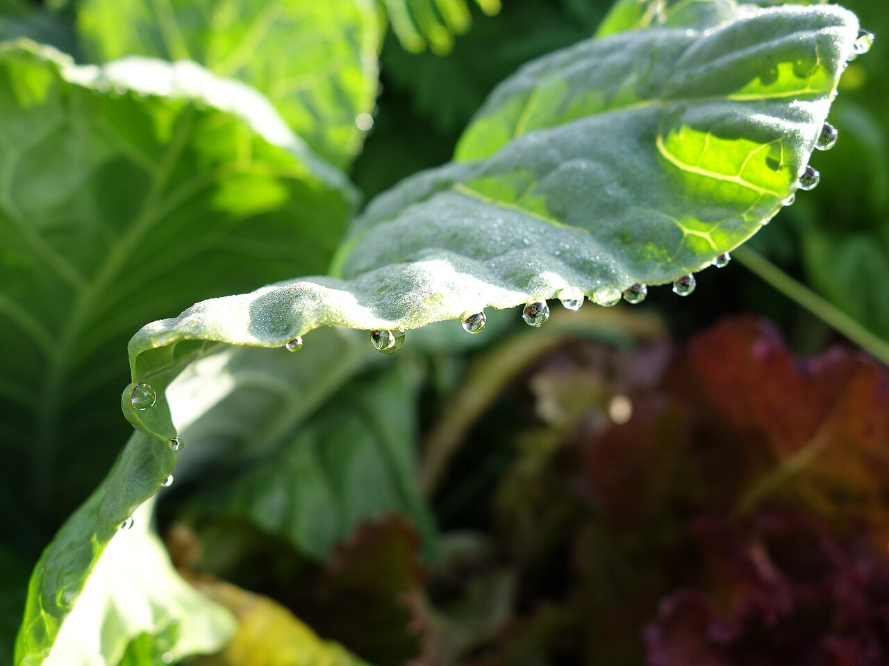
Guttation droplets on a crucifer leaf, exuded through hydathodes when root pressure is high and transpiration is low. Source: Wikimedia Commons, CC0.
Transpiration vs Guttation
Definition. Transpiration and guttation are both water-loss processes, but they differ in form (vapour vs liquid), route (stomata vs hydathodes), driving force (vapour-pressure gradient vs root pressure) and timing (day vs night).
Feature
Transpiration
Guttation
Form of water lost
Water vapour
Liquid water (droplets)
Route out of leaf
Mainly stomata (also cuticle, lenticels)
Hydathodes at leaf margins/vein endings
Driving force
Vapour-pressure gradient; transpiration pull
Root pressure (positive pressure from below)
Control
Regulated: stomata open and close
Unregulated: hydathode pore is permanently open
When it occurs
Mainly in daytime, in light, when stomata are open
At night / early morning, when transpiration is low and humidity high
Composition of fluid
Pure water vapour
Water with dissolved minerals (can leave deposits)
Effect on plant
Creates pull for ascent of sap; cools leaf
Relieves excess root pressure; no cooling role of note
Diagram: Transpiration loses water vapour through stomata by day, driven by a vapour-pressure gradient; guttation loses liquid droplets through hydathodes at night, driven by root pressure.
Part B: Mineral Nutrition
Essential Elements
Definition. An essential element is a mineral element that a plant must obtain from its environment to complete its life cycle normally; it cannot be replaced by another element, and it is directly involved in plant metabolism or structure.
Of the many elements found in plant ash, only a small number are essential. Plants are composed mainly of carbon, hydrogen and oxygen (obtained from air and water), plus mineral elements absorbed from soil as ions. The mineral elements are conventionally divided by the quantity required into macronutrients and micronutrients, but "micro" refers to quantity needed, not to importance — a micronutrient deficiency can be just as lethal as a macronutrient deficiency.
Elements enter the plant as ions: nitrogen mainly as nitrate (NO3−) or ammonium (NH4+), phosphorus as phosphate (H2PO4− / HPO42−), potassium as K+, calcium as Ca2+, magnesium as Mg2+, sulphur as sulphate (SO42−), iron as Fe2+/Fe3+, and so on. The form absorbed matters because it determines how the element is transported and assimilated.
Diagram: Only elements that pass all three essentiality tests count as essential; the rest of plant ash is incidental, not essential.
Macronutrients and Micronutrients
Definition. Macronutrients are essential elements required in relatively large amounts (generally more than 1 mg per gram of dry matter). Micronutrients (trace elements) are essential elements required in very small amounts (generally less than 1 mg per gram of dry matter).
C, H and O come from air and water; the other six are mineral macronutrients absorbed from soil. Some lists count only the six mineral macronutrients as "macronutrients" — state which convention you are using in an answer.
Required in trace amounts but essential. Nickel is the most recently recognised essential element (for urease activity); its inclusion is a common exam point.
Total essential elements on the standard list: 17 (9 macro + 8 micro). If a question asks for "mineral nutrients" only, the answer is 14 (6 mineral macro + 8 micro), excluding C, H and O.
Diagram: Macronutrients are needed in large amounts (C, H, O, N, P, K, Ca, Mg, S); micronutrients in tiny amounts (Fe, Mn, Zn, Cu, B, Mo, Cl, Ni) — small dose, not small importance.
Criteria of Essentiality (Arnon and Stout, 1939)
Definition. The criteria of essentiality, proposed by Arnon and Stout (1939), are the three tests an element must pass before it is accepted as essential for a plant.
Indispensability for normal growth and reproduction: the plant cannot complete its life cycle normally without the element; deficiency causes abnormal growth and the plant fails to set viable seed.
Non-substitutability: the requirement is specific — no other element can fully replace it. (A related element may partly alleviate symptoms, but it cannot substitute completely.)
Direct involvement: the element is directly involved in plant metabolism — as a structural component, an enzyme cofactor, or a participant in a metabolic reaction — not merely by making another element more available.
How essentiality is tested: plants are grown in purified nutrient solution (hydroponics / solution culture) with one element omitted at a time. If omission produces characteristic deficiency symptoms that disappear when the element is restored, and the three criteria are met, the element is essential. The classic technique is the nutrient-solution culture method, and the symptoms observed are deficiency symptoms.
Test 1 — Indispensable: without it the plant cannot complete its life cycle normally.
v
Test 2 — Non-substitutable: no other element can fully replace it.
v
Test 3 — Direct role: it acts directly in metabolism or structure, not by accident.
Diagram: the three Arnon and Stout (1939) criteria of essentiality, applied in order.
Role of Essential Elements
Definition. Each essential element has a specific structural or functional role — as a constituent of a biomolecule, a cofactor or activator of enzymes, an osmoticum, or a regulator of membrane and stomatal function. Deficiency of any one produces characteristic symptoms.
Element
Main roles
Nitrogen (N)
Constituent of amino acids, proteins, nucleic acids, chlorophyll and coenzymes. The most commonly limiting nutrient; deficiency causes general chlorosis (yellowing), especially of older leaves, and stunted growth.
Phosphorus (P)
Constituent of nucleic acids, ATP, phospholipids and coenzymes; essential for energy transfer, membrane structure and root development.
Potassium (K)
Activates many enzymes; regulates stomatal opening and closing via guard-cell turgor; maintains osmotic balance and anion–cation balance; involved in protein synthesis. Absorbed as K+, not incorporated into stable organic compounds.
Calcium (Ca)
Constituent of the middle lamella (calcium pectate) of cell walls; regulates membrane permeability; second messenger in signalling; activates some enzymes; needed for mitosis and root-tip growth.
Magnesium (Mg)
Central atom of the chlorophyll molecule; activator of enzymes in respiration and photosynthesis, including RuBisCO and ATPases; constituent of ribosomes.
Sulphur (S)
Constituent of cysteine and methionine, coenzyme A, thiamine and biotin; present in ferredoxin and in disulphide bonds of proteins.
Iron (Fe)
Constituent of ferredoxin, cytochromes and catalase; cofactor in chlorophyll synthesis (though not part of chlorophyll itself); involved in electron transport. Deficiency causes interveinal chlorosis of young leaves.
Manganese (Mn)
Activates enzymes of respiration and nitrogen metabolism; essential for the oxygen-evolving (water-splitting) complex of Photosystem II; involved in chlorophyll synthesis.
Zinc (Zn)
Activator of auxin synthesis (via tryptophan) and of enzymes such as carbonic anhydrase and alcohol dehydrogenase; needed for chlorophyll formation. Deficiency causes stunted "little leaf" and rosetting.
Copper (Cu)
Constituent of plastocyanin (photosynthetic electron transport) and cytochrome oxidase; involved in redox reactions and lignin synthesis.
Molybdenum (Mo)
Component of nitrate reductase and nitrogenase; therefore essential for nitrogen assimilation and for nitrogen fixation in legumes. Required in the smallest amount of any micronutrient.
Boron (B)
Needed for cell-wall structure (borate cross-links in pectin), membrane integrity, pollen germination and pollen-tube growth, and sugar translocation.
Chlorine (Cl)
Required for the water-splitting reaction of Photosystem II; involved in osmotic and anion balance and in stomatal regulation.
Nickel (Ni)
Component of the enzyme urease, which hydrolyses urea to ammonia; also involved in hydrogenase activity in nitrogen-fixing bacteria.
General deficiency principle worth stating in any answer: elements that are mobile in the plant (N, P, K, Mg) show deficiency symptoms first in older leaves, because the plant remobilises them to young growth; immobile elements (Ca, Fe, B) show symptoms first in young leaves and growing tips.
Diagram: Each element has a signature job and a signature deficiency: nitrogen gives chlorosis of older leaves, magnesium gives interveinal chlorosis, potassium gives leaf-margin scorch.
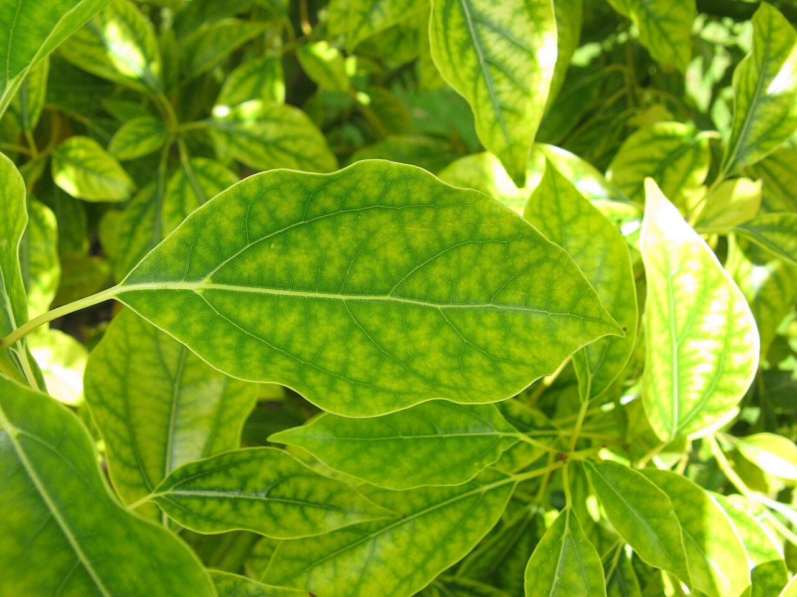
Mineral deficiency symptoms on Cinnamomum camphora leaves, showing how a missing element produces visible chlorosis. Source: Wikimedia Commons, CC BY-SA 3.0.
Transport of Ions Across the Cell Membrane
Definition. Ion transport is the movement of mineral ions across the plasma membrane (and tonoplast) by passive mechanisms (down an electrochemical gradient, no metabolic energy) or active mechanisms (against a gradient, using metabolic energy, usually ATP).
The plasma membrane is selectively permeable: its lipid bilayer blocks most ions, so ions cross mainly through membrane proteins. The membrane also maintains an electrochemical gradient — typically a negative membrane potential inside (around −120 to −200 mV in plant cells) and a proton gradient created by H+-ATPases. That gradient is the driving force for much secondary active transport.
Three routes exist across the membrane: (1) through the lipid bilayer itself (only for small, uncharged, lipid-soluble molecules — not for ions); (2) through channel proteins; (3) through carrier proteins, including pumps. The flowchart below summarises the decision a student should make when classifying any transport event.
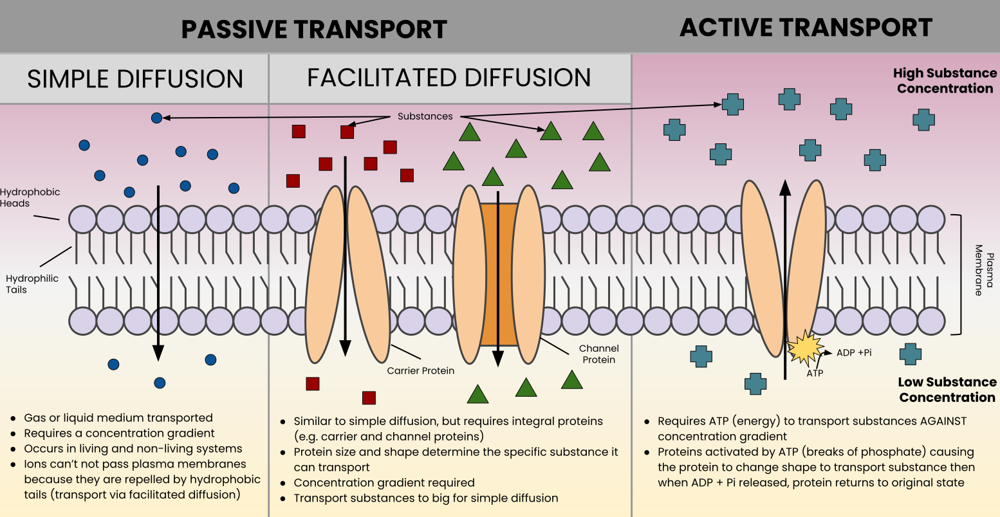
Passive versus active membrane transport: passive movement follows the gradient, active movement uses ATP to go against it. Source: Wikimedia Commons, CC BY-SA 4.0.
Step 1 — Is the movement down the electrochemical gradient? Yes: passive transport. No (against the gradient): active transport, energy required.
↓
Step 2 — Passive route: through the bilayer (small uncharged molecules only) or by facilitated diffusion through a channel or carrier protein.
↓
Step 3 — Active route: primary active transport uses ATP directly (ATPase pumps); secondary active transport uses a gradient built by primary transport (symport / antiport).
↓
Step 4 — Check the protein: channel = open pore, fast, no binding change; carrier = binds the solute, changes shape, slower and saturable; pump = carrier that uses ATP.
Feature
Passive transport
Active transport
Direction
Down the electrochemical gradient (high to low)
Against the electrochemical gradient (low to high)
Energy
None required; uses the gradient itself
Required, directly or indirectly from ATP
Proteins involved
Channels and some carriers (facilitated diffusion)
Pumps (ATPases), carriers for secondary transport
Effect of metabolic inhibitors
Unaffected
Inhibited (ATP supply cut off)
Examples
K+ entry through K+ channels; facilitated diffusion of ions
H+ pumping by plasma-membrane H+-ATPase; uptake of NO3− against its gradient
Simple Diffusion
Definition. Simple diffusion is the passive movement of molecules or ions from a region of higher concentration to a region of lower concentration, down the concentration gradient, without a membrane protein and without metabolic energy, until equilibrium is reached.
Diffusion is driven by the random thermal motion of particles. Its rate increases with the steepness of the gradient, with temperature, and with the permeability of the barrier, and decreases with molecular size and distance. Across a membrane, simple diffusion is significant only for small, uncharged, lipid-soluble molecules such as O2, CO2 and, to a lesser extent, water. Charged ions diffuse very poorly through the hydrophobic lipid bilayer, which is why they need channels and carriers.
Diffusion alone is slow over long distances and cannot move ions against a gradient or accumulate them inside a cell. That limitation is exactly why facilitated diffusion and active transport exist.
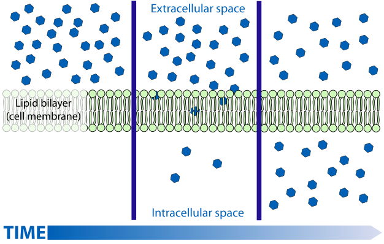
Simple diffusion across a cell membrane, from higher to lower concentration without a transport protein. Source: Wikimedia Commons, public domain.
Facilitated Diffusion
Definition. Facilitated diffusion is passive transport down the electrochemical gradient through a membrane protein (a channel or a carrier). It is faster than simple diffusion for the solute concerned and shows specificity, but it still requires no metabolic energy and cannot move a solute against its gradient.
Facilitated diffusion differs from simple diffusion in three exam-relevant ways: it is specific (each protein transports particular ions), it is saturable (the rate levels off when all proteins are occupied), and it can be inhibited by molecules that compete for or block the protein. A channel provides a continuous water-filled pore; a carrier binds the solute on one side, changes conformation, and releases it on the other side.
Example: K+ channels in guard-cell membranes allow rapid K+ flux during stomatal opening and closing — a facilitated-diffusion process driven by the electrochemical gradient for K+, not by ATP acting on the channel itself.
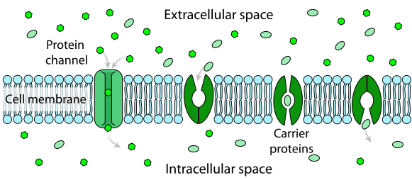
Facilitated diffusion through a membrane protein, down the concentration gradient and without ATP. Source: Wikimedia Commons, public domain.
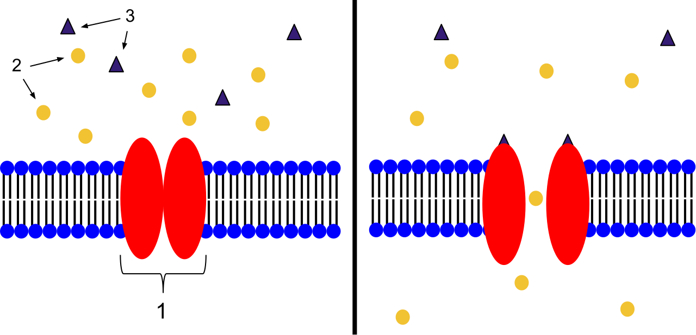
An ion channel receptor in a membrane, the protein route used in facilitated diffusion. Source: Wikimedia Commons, CC BY-SA 3.0.
Carriers vs Channels
Definition. Channels are membrane proteins that form an open, water-filled pore through which ions flow rapidly down their gradient. Carriers are membrane proteins that bind a specific solute, undergo a conformational change, and release the solute on the other side.
Feature
Channel
Carrier
Mechanism
Open pore; ions flow through continuously
Binds solute, changes shape, releases it
Speed
Very fast (up to ~108 ions per second per channel)
Slower (around 102–104 molecules per second)
Specificity
Selective for ion size and charge (e.g. K+ channels)
Highly specific; often transports one solute or a pair
Gating
Often gated — opened or closed by voltage, ligands or stretch
Not gated in the same way; cycles through conformations
Saturation
Shows saturation only weakly at physiological rates
Diagram: Channel: open pore, very fast, ions flow continuously. Carrier: binds, changes shape, releases — slower and highly specific.
Ionophores
Definition. Ionophores are lipid-soluble molecules that bind ions and carry them across a membrane, or form a pore through which ions pass, thereby increasing the membrane's permeability to that ion.
There are two types. Mobile carriers (for example valinomycin, which carries K+) bind an ion on one side of the membrane, diffuse through the lipid bilayer as a lipid-soluble complex, and release the ion on the other side. Channel-forming ionophores (for example gramicidin A, which forms a pore for monovalent cations) insert into the membrane and create a continuous passage.
Ionophores are important experimentally and pharmacologically because they collapse ion gradients: valinomycin collapses the K+ gradient, and the proton ionophore CCCP (carbonyl cyanide m-chlorophenylhydrazone) collapses proton gradients and uncouples oxidative phosphorylation and photophosphorylation. In exam answers, name one example and state which gradient it destroys — that is usually the mark.
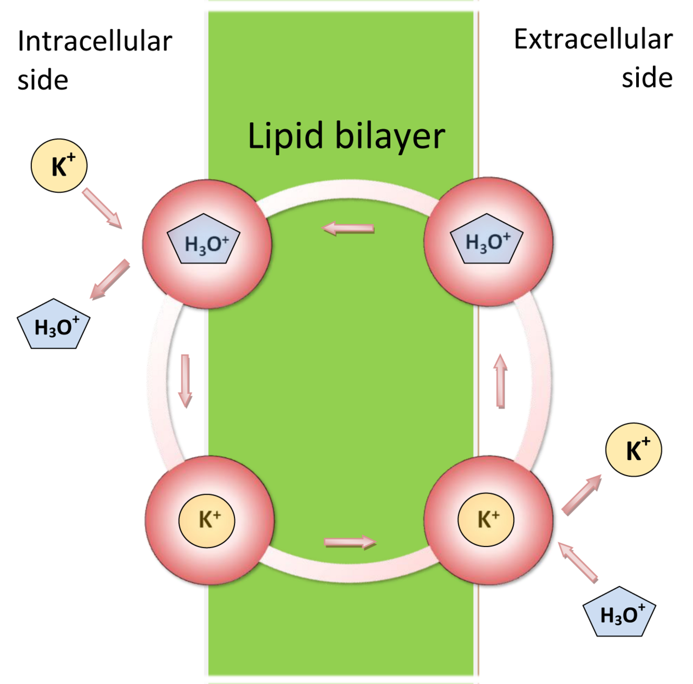
Valinomycin, a mobile ionophore that carries K+ across membranes. Source: Wikimedia Commons, CC BY-SA 3.0.
P-, V- and F-ATPases (Pumps)
Definition. ATPases are membrane pumps that hydrolyse ATP and use the released energy to transport ions against their electrochemical gradient. They are classified by structure and mechanism into P-type, V-type and F-type ATPases.
Type
Location in plants
What it pumps
Key features
P-type ATPase
Plasma membrane (H+-ATPase); also Ca2+-ATPases and Na+/K+-ATPase in animals
H+ out of the cell (plant plasma-membrane H+-ATPase); Ca2+ into organelles or out of the cell
Forms a phosphorylated intermediate during the pumping cycle (hence "P"); inhibited by vanadate. The plant plasma-membrane H+-ATPase builds the proton gradient that drives most secondary active transport and nutrient uptake.
V-type ATPase
Tonoplast (vacuolar membrane) and endomembranes
H+ into the vacuole / lumen
Acidifies the vacuole (pH ~5) and endomembrane compartments; inhibited by bafilomycin; does not form a phosphorylated intermediate. The vacuolar proton gradient powers transport of ions and metabolites into the vacuole.
F-type ATPase
Inner mitochondrial membrane (ATP synthase) and thylakoid membrane (chloroplast ATP synthase, CF0–CF1)
H+ down its gradient, synthesising ATP (reverse of a pump in normal operation)
Rotary motor; runs in reverse as an ATP synthase, using the proton-motive force made by electron transport to make ATP. Inhibited by oligomycin (mitochondrial) and related compounds. Strictly, the F-type is an ATP synthase rather than a primary ion pump, and a good answer says so.
The plant plasma-membrane H+-ATPase deserves emphasis: by pumping protons out, it makes the inside of the cell electrically negative and the outside acidic. That proton-motive force then drives the uptake of nitrate, phosphate, sulphate, amino acids and sugars by H+-coupled cotransporters — which is the subject of the next-but-one section.
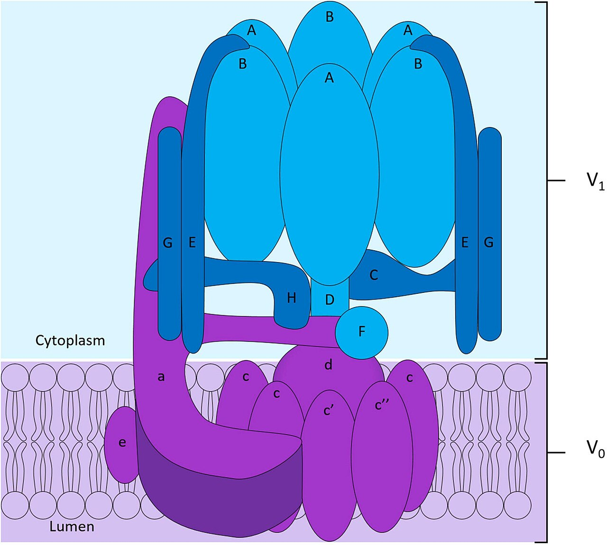
Structure of the V-ATPase proton pump. P-, V- and F-ATPases all use ATP to pump ions against a gradient. Source: Wikimedia Commons, CC BY 4.0.
ABC Transporters
Definition. ABC (ATP-binding cassette) transporters are a large family of membrane proteins that use ATP hydrolysis at their nucleotide-binding domains to transport a wide range of substrates across membranes, usually against a concentration gradient.
ABC transporters share a conserved architecture: two transmembrane domains that form the substrate pathway, and two nucleotide-binding domains (the ATP-binding cassettes) that bind and hydrolyse ATP to drive conformational changes. In plants they are exceptionally diverse — Arabidopsis has over 100 ABC genes — and they transport hormones (such as auxin), lipids, secondary metabolites, xenobiotics and heavy-metal complexes.
Important plant examples: ABCB (PGP) transporters involved in auxin efflux; ABCC (MRP) transporters that move glutathione-conjugated toxins and phytochelatin–metal complexes into the vacuole for detoxification; and ABC transporters of the chloroplast and mitochondrial membranes. Their medical parallel — human ABCB1 (P-glycoprotein) pumping drugs out of cells — is sometimes cited, but in a botany answer, give a plant example first.
1. Substrate binds in the transmembrane domains of the ABC transporter.
v
2. ATP binds and is hydrolysed at the two nucleotide-binding domains.
v
3. Shape change releases the substrate on the other side, usually against its gradient.
Diagram: the ATP-driven cycle of an ABC transporter.
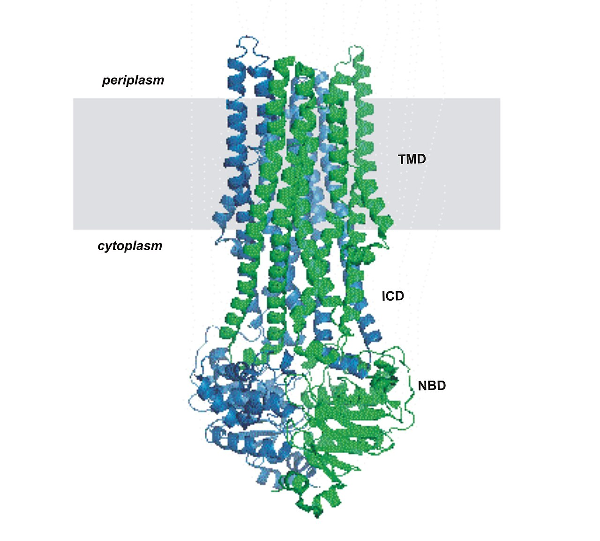
Structure of Sav1866, an ABC transporter with transmembrane and nucleotide-binding domains. Source: Wikimedia Commons, public domain.
Primary vs Secondary Active Transport
Definition. Primary active transport uses ATP directly to pump an ion against its gradient. Secondary active transport uses the electrochemical gradient created by primary transport to drive the movement of another solute against its own gradient, without ATP acting directly on the second transporter.
Feature
Primary active transport
Secondary active transport
Energy source
ATP hydrolysed directly by the pump
Ion gradient (usually H+ or Na+) built by primary transport
Protein
ATPase pump (P-type, V-type)
Cotransporter (symporter or antiporter)
Example
Plasma-membrane H+-ATPase pumping H+ out
NO3−/H+ symport into root cells; Na+/H+ antiport out of the cell
Effect of ATP depletion
Stops immediately
Stops as the driving gradient runs down
Symport moves two solutes in the same direction (for example H+ and NO3− both into the cell). Antiport (exchange) moves them in opposite directions (for example H+ out, Na+ in, or vice versa depending on the transporter). Uniport moves a single solute, as in facilitated diffusion through a channel. Do not confuse symport/antiport with primary transport: the cotransporter itself does not hydrolyse ATP.
Diagram: Primary active transport burns ATP directly to build a gradient; secondary active transport spends that gradient to drag a second solute uphill, as symport or antiport.
Aquaporins
Definition. Aquaporins are channel proteins that greatly increase the permeability of a membrane to water, allowing rapid, selective, passive movement of water molecules down a water-potential gradient.
Discovered by Peter Agre (Nobel Prize in Chemistry, 2003, for the aquaporin work), aquaporins are small integral membrane proteins (about 28–30 kDa) with six membrane-spanning helices. Four monomers assemble into a tetramer, and each monomer contains its own water pore. The pore is narrow and lined so that water molecules pass in single file while protons and other ions are excluded — essential, because a proton leak would destroy the membrane potential.
Plants have many aquaporin genes (35 in Arabidopsis), grouped into PIPs (plasma-membrane intrinsic proteins), TIPs (tonoplast intrinsic proteins), NIPs and SIPs. Aquaporins do not move water against a gradient and do not use ATP: they only speed up osmosis. Their abundance and gating (by phosphorylation, pH and Ca2+) regulate root water uptake, leaf hydraulics and responses to drought and flooding. A common exam error is to say aquaporins "pump" water — they do not; they are passive channels for water.
Diagram: Aquaporins are tetramers; each monomer has its own narrow water pore. Water passes in single file, while protons and ions are excluded.
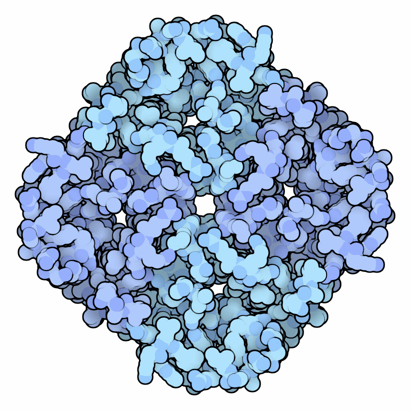
Aquaporin channel structure, the water pore that lets water cross membranes rapidly and selectively. Source: Wikimedia Commons, CC BY 3.0.
Exam Traps — Read Before You Revise
Water potential vs osmotic pressure: water potential (Ψw) is usually negative; osmotic pressure is the same magnitude with the opposite (positive) sign. Ψs = − (osmotic pressure). If you write Ψs = +0.8 MPa, you have the sign wrong.
Guttation through hydathodes, not stomata: guttation releases liquid water through hydathodes; transpiration releases vapour through stomata. Any option that pairs guttation with stomata is wrong.
Micronutrient Zn question style: examiners frequently ask which element is needed for auxin synthesis, or which deficiency causes little-leaf / stunted growth — the answer is zinc (Zn). Do not answer iron or manganese for auxin synthesis.
Root pressure is weak and cannot explain tall-tree ascent alone: root pressure (typically 0.1–0.2 MPa) can lift water only a short distance and is absent in many plants during active transpiration. Tall-tree ascent is explained by transpiration pull and cohesion–tension.
Pure water has Ψw = 0: not 1, not 100, not "maximum positive". Every other solution is negative relative to it.
Micronutrient means small quantity, not small importance: do not dismiss Fe, Zn, Mo or B as "minor" in an answer — deficiency is lethal.
Aquaporins do not pump water: they are passive channels; water still moves down its water-potential gradient.
Flaccid cell: Ψp = 0, so Ψw = Ψs. Fully turgid cell: Ψw = 0, because Ψp = −Ψs. Mixing these two up loses the mark.
Short Notes (Exam-Ready)
Each note below is written to be reproduced as a short answer. Add the diagram cue where noted.
Short Note 1: Water Potential and Its Components
Water potential (Ψw) is the free energy of water per unit volume relative to pure water, expressed in MPa; pure water at atmospheric pressure has Ψw = 0. Its components are: solute potential (Ψs, negative, due to dissolved solutes; equal and opposite to osmotic pressure), pressure potential (Ψp, usually positive, the turgor pressure of the cell), and matric potential (Ψm, negative, due to adsorption to surfaces; important in soil and dry seeds, negligible in hydrated cells). Hence Ψw = Ψs + Ψp (+ Ψm). Water moves from higher (less negative) to lower (more negative) Ψw. In a flaccid cell Ψp = 0, so Ψw = Ψs; in a fully turgid cell Ψp balances Ψs, so Ψw = 0 and no net movement occurs.
Short Note 2: Significance of Transpiration
Transpiration is the loss of water vapour from aerial plant parts, mainly through stomata. Its significance is: (1) it generates transpiration pull, the main force for the ascent of sap; (2) it drives the absorption and upward transport of water and dissolved minerals; (3) evaporation cools the leaf and protects enzymes from heat damage; (4) it maintains a continuous water supply that keeps cells turgid for growth and stomatal function. Because stomata must open for CO2 uptake, water loss is unavoidable — transpiration is therefore called a "necessary evil". The cost is high (over 95% of absorbed water is lost), but without it the plant could not lift water or take in carbon dioxide.
Short Note 3: Factors Affecting Transpiration
External factors: light increases transpiration (stomata open, leaf warms); higher temperature increases it (higher internal vapour pressure); high humidity decreases it (smaller vapour-pressure gradient); wind increases it by removing the boundary layer (very strong wind may close stomata); low atmospheric pressure increases it; low soil water decreases it (ABA-mediated stomatal closure). Internal factors: more and larger stomata, stomata on both leaf surfaces, larger leaf area, thin cuticle and high leaf water content all increase transpiration, while thick cuticle, sunken stomata, hairs and rolled leaves reduce it. Rule of thumb: anything that opens stomata or steepens the vapour-pressure gradient raises the rate.
Short Note 4: Criteria of Essentiality (Arnon and Stout, 1939)
An element is essential only if it satisfies three criteria: (1) the plant cannot complete its life cycle normally without it; (2) its requirement is specific and no other element can fully substitute for it; (3) it is directly involved in plant metabolism, as a structural component, enzyme cofactor or reaction participant. Essentiality is tested by solution culture: omitting the element produces characteristic deficiency symptoms that are corrected when it is restored. On this basis 17 elements are essential — 9 macronutrients (C, H, O, N, P, K, Ca, Mg, S) and 8 micronutrients (Fe, Mn, Zn, Cu, Mo, B, Cl, Ni).
Short Note 5: Role of Macronutrients
Nitrogen is a constituent of proteins, nucleic acids and chlorophyll; phosphorus of ATP, nucleic acids and membranes; potassium regulates stomata, activates enzymes and maintains osmotic balance; calcium builds the middle lamella and stabilises membranes; magnesium is the central atom of chlorophyll and activates photosynthetic and respiratory enzymes; sulphur is a constituent of cysteine, methionine and coenzyme A. Mobile elements (N, P, K, Mg) show deficiency first in older leaves; immobile elements show it first in young leaves. This contrast is a reliable way to identify a deficiency in a question.
Long Answers (Model Answers)
Long Answer 1: Transpiration Pull and Ascent of Sap vs Root Pressure
Answer structure: (1) Define ascent of sap and state the problem: water must rise tens of metres against gravity. (2) Describe root pressure, its mechanism and its limits. (3) Present the cohesion–tension theory step by step. (4) Compare the two forces in a table. (5) Conclude with the accepted explanation.
Model answer. Ascent of sap is the upward movement of water and dissolved minerals from roots to leaves through xylem. Root pressure is a positive pressure generated in root xylem when ions are actively pumped into the stele and water follows by osmosis. It is demonstrable by bleeding from a cut stem, but it is typically only 0.1–0.2 MPa, it is strongest when transpiration is low, and it is absent in many plants, including many gymnosperms. It therefore cannot lift water to the top of a tall tree, which would require a pressure of roughly 0.1 MPa per 10 metres plus resistance — well beyond what roots generate, and it cannot operate while transpiration is actively pulling in the opposite accounting sense.
The accepted explanation is the cohesion–tension theory (Dixon and Joly, 1894). Transpiration from mesophyll cell walls into the substomatal cavity and out of the stomata removes water from leaf xylem, creating tension (negative pressure) there. Because water molecules cohere strongly to one another and adhere to xylem walls, the tension is transmitted down the continuous, unbroken water column to the roots, and the column is pulled upward as a whole. Capillarity in narrow xylem elements assists, but it is not the main force.
Marking points: root-pressure mechanism (active ion pumping, osmosis) — root-pressure magnitude and limits — definition of tension — cohesion — adhesion — continuity of the water column — conclusion that transpiration pull, not root pressure, explains tall-tree ascent. Diagram cue: draw the transpiration-pull diagram (leaf, xylem column, root) and label cohesion, adhesion and the direction of pull; add a small inset showing root pressure as a push from below.
Long Answer 2: Ion Transport Across Membranes
Answer structure: (1) State the barrier problem: the lipid bilayer blocks ions. (2) Distinguish passive and active transport. (3) Explain simple vs facilitated diffusion, and carriers vs channels. (4) Explain pumps: P-, V- and F-ATPases and ABC transporters. (5) Explain primary vs secondary active transport with symport/antiport. (6) Add ionophores and aquaporins as related mechanisms. (7) Conclude with the plant example of H+-coupled nutrient uptake.
Model answer. Ions cannot cross the lipid bilayer freely because of its hydrophobic interior, so they cross through membrane proteins. Passive transport moves ions down their electrochemical gradient without metabolic energy: simple diffusion across the bilayer (negligible for ions) and facilitated diffusion through channels (open pores, very fast) or carriers (bind, change shape, release; slower, saturable, specific). Active transport moves ions against their gradient using energy. Primary active transport hydrolyses ATP directly — the plasma-membrane P-type H+-ATPase pumps protons out of the cell, and the tonoplast V-type H+-ATPase acidifies the vacuole, while the F-type ATP synthase of mitochondria and chloroplasts normally runs in reverse to make ATP from a proton gradient. ABC transporters use ATP at their nucleotide-binding domains to export hormones, metabolites and detoxified metal complexes. Secondary active transport spends no ATP directly: it uses the proton gradient built by primary transport to drive cotransport — symport (for example NO3− entering with H+) or antiport (for example Na+/H+ exchange). Ionophores such as valinomycin (K+ carrier) and gramicidin (channel-former) collapse gradients experimentally. Water, finally, crosses by osmosis through aquaporins — passive channels, not pumps — which speed water movement without changing its direction, which is always down the water-potential gradient.
Marking points: bilayer barrier — passive vs active distinction — channel vs carrier comparison — one example each for P-, V- and F-ATPase — ABC transporter structure and a plant example — primary vs secondary distinction — symport vs antiport examples — aquaporins as passive water channels. Diagram cue: draw the membrane-transport diagram (outside, bilayer with channel/carrier/pump, inside) and annotate one passive and one active route with arrows and labels.
Unit 1 Study Checklist
Your ticks are saved in this browser (local storage) for this unit only.